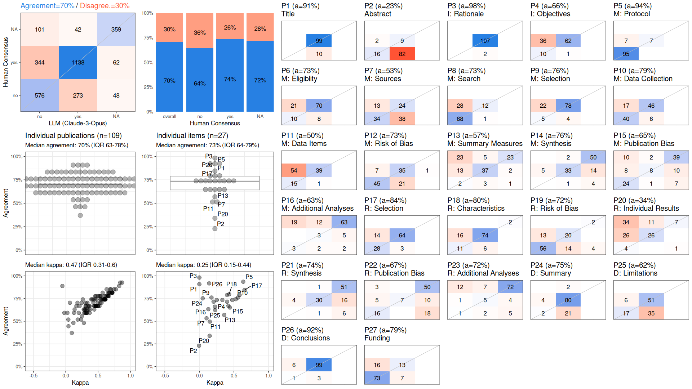
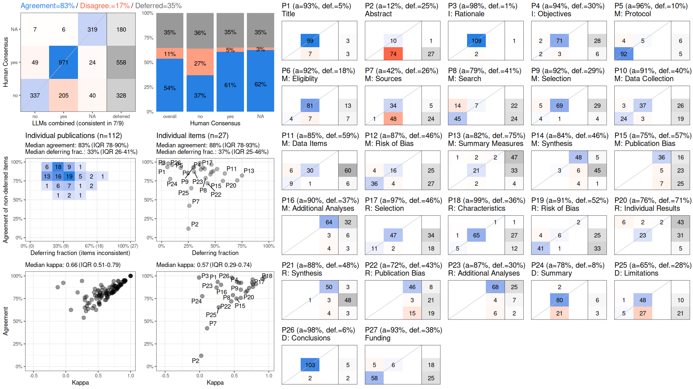
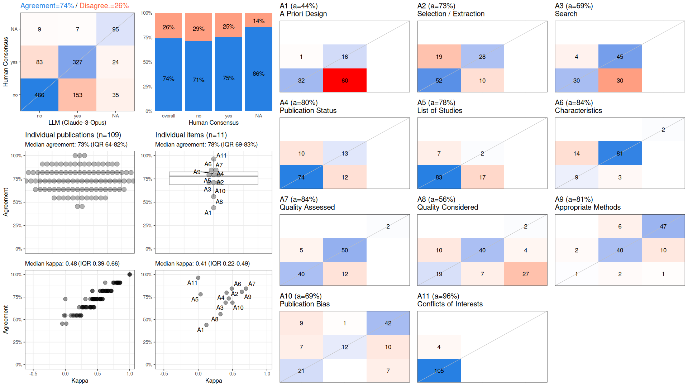
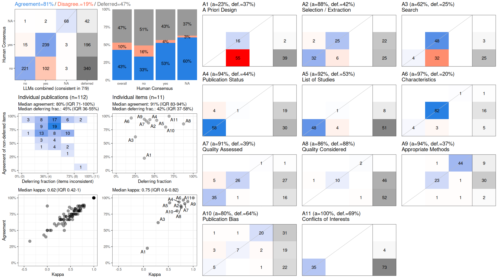
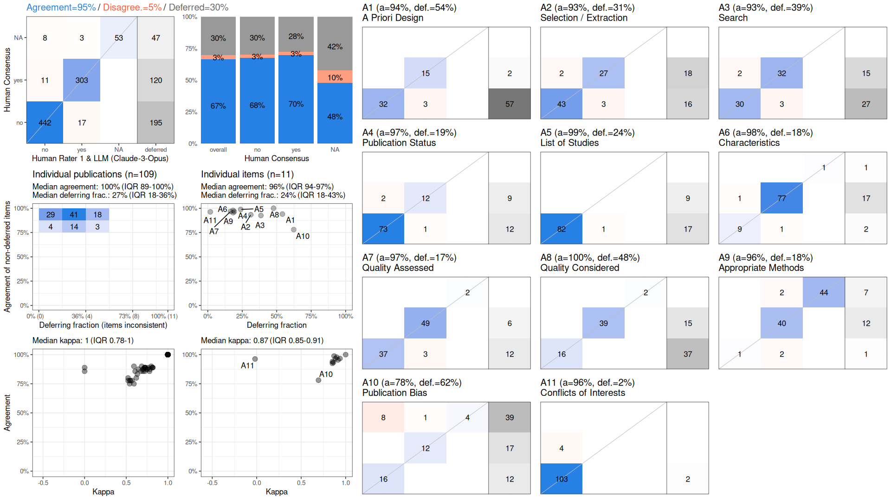
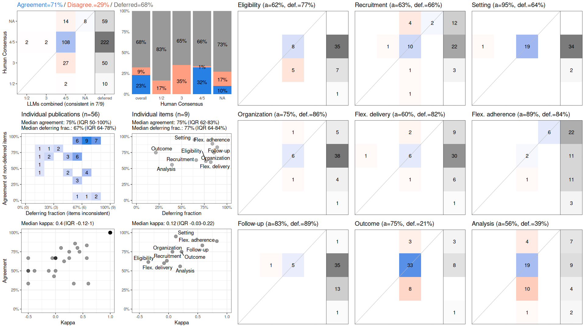

| (1) Human Rater 1 | (2) Best Individual LLM | (3) Combined LLMs (consistent in 7 / 9 LLM assessments) |
(4) Best Human-AI Collaboration | |
|---|---|---|---|---|
| PRISMA 27 items × 112 publications |
 |  | ||
| AMSTAR 11 items × 112 publications |
 |  |  | |
| PRECIS-2 9 items × 56 publications |
 |